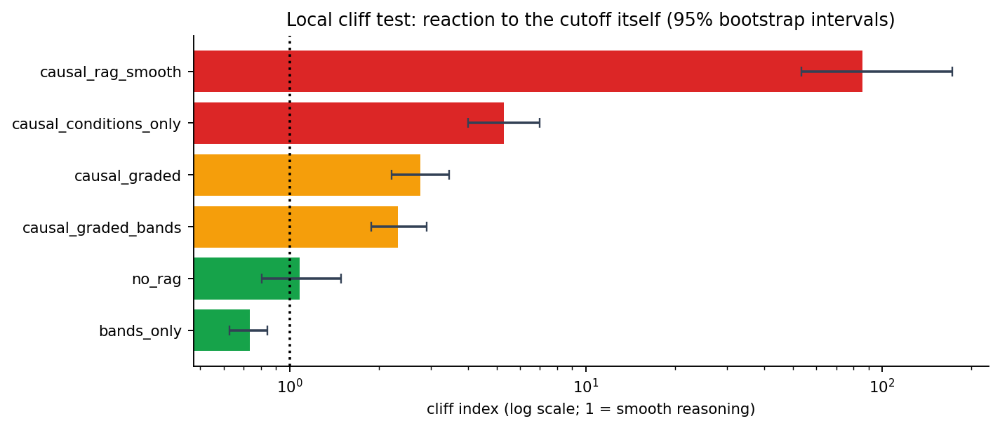
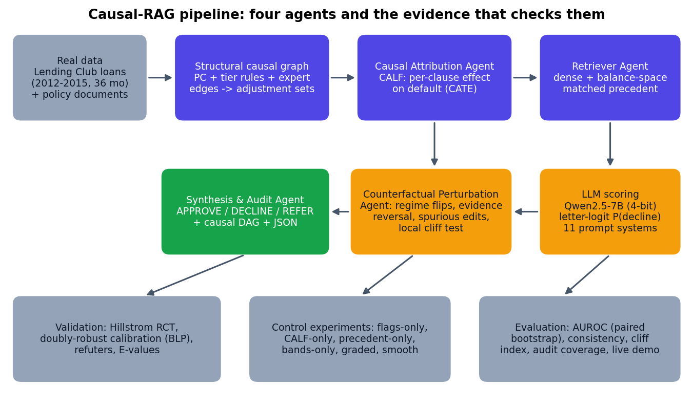
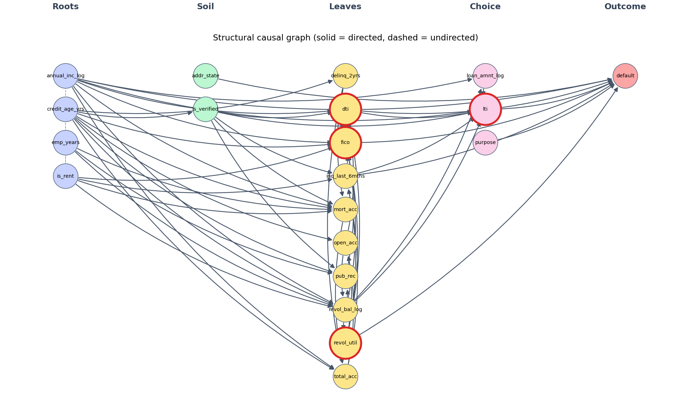
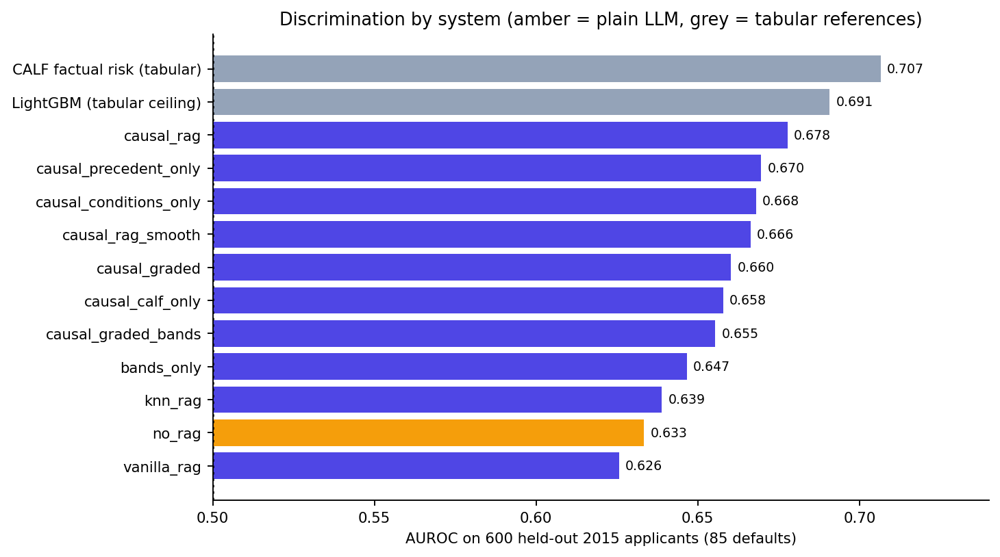

I Built a Causal AI for Lending. The Real Finding Was That a Prompt Behaved Like a Hard Rule.
Seven runs, 589,099 real loans, and an audit that caught my own mistakes.

Here is a number I did not expect to write: 86.
That is how many times more a language model's answer jumped when a loan applicant crossed a cutoff by half a point, compared with moving the same distance anywhere else. I had designed that prompt to make the model smoother. It made it the most cliff-like system in the whole project.
Finding that out is the best thing that happened to Causal-RAG.
The pitch
Standard retrieval-augmented generation finds documents that look similar to your question. In lending, similar is dangerous. Similar past cases repeat past biases, and they mistake confounders for real risk drivers. A borrower with a high debt-to-income ratio also tends to have other things going on, so "similar loans defaulted" is not the same as "this clause causes default."
So I built four cooperating agents:
- Retriever: finds evidence, but adjusts it using a structural causal graph.
- Causal Attribution: uses my own CALF model to estimate how much each underwriting clause (DTI above 25%, utilization above 75%, FICO below 680, loan-to-income above 20%) changes the chance of default.
- Counterfactual Perturbation: edits the applicant or the evidence and checks whether the language model reacts the way the causal estimate says it should.
- Synthesis & Audit: outputs APPROVE, DECLINE or REFER_TO_HUMAN, with a causal graph, a JSON record and a written rationale.

The rules were strict: real data only. 589,099 resolved 36-month Lending Club loans from 2012 to 2015, real Fannie Mae and CFPB policy text, and a real randomised experiment for validation. No synthetic data anywhere.

What worked
The causal estimates held up. For three of the four clauses, CALF's predicted effect heterogeneity was well calibrated (calibration slope 0.86 to 1.18, where 1 is perfect). A standard LightGBM approach was badly over-dispersed (slopes 0.04 to 0.27). Utilization was weak at 0.19, and I say so.
It matched a real experiment. There is no ground truth for individual loan effects, so I checked against the Hillstrom randomised e-mail experiment. The model's average effect of 0.066 to 0.069 sat inside the experimental interval of 0.059 [0.045, 0.073], and CALF ranked customers far better than a T-learner (Qini about 31 against 9).
Every refutation test passed. Placebo treatment, random common cause, subsample: all four clauses survived.
What did not work
I fed those causal estimates to a language model (Qwen2.5-7B) and measured it on 600 held-out 2015 applicants, 85 of whom defaulted.

The plain LLM scored an AUROC of 0.633. The Causal-RAG variants scored 0.658 to 0.678. That is a difference of 0.02 to 0.04, with p = 0.06 at best. Not significant.
Then I ran the control that mattered: a prompt that only lists which risk flags apply, with no causal evidence at all. It scored 0.668 against the full pipeline's 0.678 (p = 0.59). The causal evidence added no measurable accuracy beyond the flags. And a plain tabular model, CALF's own risk score at 0.707, beat every language-model variant.
The cliff
A fair lending system should not treat a FICO score of 679 and 680 as different universes. So I built a local cliff test: nudge a field just across its cutoff, and compare the model's reaction with an equal nudge elsewhere. An index of 1 means smooth.
- Plain LLM: 1.08, smooth.
- A prompt with band tables and no cutoff wording: 0.73, smooth.
- A graded prompt: 2.8, a mild cliff that remains.
- A prompt with only flags: 5.3, a cliff.
- The prompt I wrote specifically to be smooth, using labels: 86.
Any prompt that describes conditions as cutoffs makes the model act like it is following a rulebook. For a regulated industry that is exactly the kind of behavior you want to know about before you deploy.
The mistake I caught in myself
My first cliff metric moved a field "just across" its cutoff from wherever it started. For an applicant far from the cutoff, that is a big jump, not a nudge, so my early readings were confounded by move size. I replaced the metric, and the new one reversed my earlier conclusion about the smooth prompt. The report lists this and several other corrections, because seven archived runs is long enough to be wrong in.
What I would tell you
- Causal estimation on real data can be validated honestly. Feeding those estimates to a language model did not make it a better underwriter.
- Always run the flags-only control. It is the one that deflates most "my pipeline helped" claims.
- If your prompt mentions cutoffs, test whether your model now treats them as cliffs.
- The audit machinery, not the headline number, is the reusable contribution.